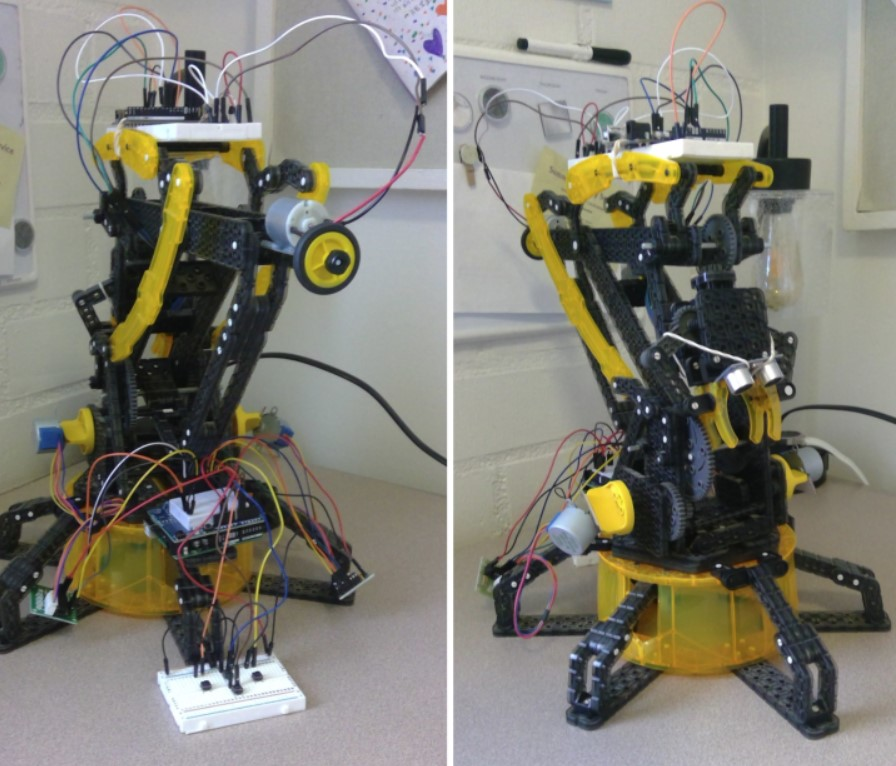

I worked as an engineering intern for the Eastern Municipal Water District.
My Projects
Through my project experiences, I've developed a versatile skill set that spans various technical and soft skills. Specifically, I've gained expertise in robotics, sensor integration, microcontroller programming (Arduino, Raspberry Pi), CAD modeling (SolidWorks), and using simulation tools like MATLAB. These skills have been instrumental in designing, testing, and implementing electronic components and autonomous systems.
My involvement in projects has significantly enhanced my problem-solving abilities. I've become adept at troubleshooting technical issues and devising innovative solutions to overcome challenges. Moreover, I've cultivated strong project management skills, effectively coordinating tasks, managing resources, and navigating project constraints such as time and budget limitations.
Collaborating within project teams has refined my interpersonal skills, communication, and collaborative prowess. Additionally, working with simulations and data analysis tools has sharpened my analytical thinking and ability to derive insights from technical data. These experiences have also increased my adaptability to new technologies, methodologies, and diverse problem domains, fostering a well-rounded skill set applicable in various contexts.
Dual-Link Arm Mechanism
For this project, I employed MATLAB to develop fundamental functions aimed at acquiring the free configuration space of a two-link robot. This function required input parameters detailing the arm's physical attributes, the obstacle's location, and the desired sample quantity. It proceeded to illustrate the arm at various positions, employing distinct sampling methods like random, central, or Halton's method to ascertain potential collisions with the obstacle. Subsequently, it generated a visual representation of the free configuration space, delineating collision occurrences within that configuration. Additionally, leveraging this configuration space, a breadth-first search algorithm was utilized to establish an optimal path between two specific arm configurations.
This project has significantly strengthened my proficiency in MATLAB, enhancing my logical thinking and problem-solving abilities. It provided a hands-on experience in applying foundational algorithms such as the Breadth First Search Algorithm to real-world scenarios, enriching my practical understanding of algorithmic principles.
Mechanical Arm
This project involves the automation of a Lego mechanical arm using various components such as a stepper motors, a DC motoro, an ultrasonic sensor, and button controls. The mechanical arm resembles a two-link robot, where gears regulate its motion. The first gear controls forward-backward movemet, the second manages up-down motion, and the arm terminates in a claw controlled by a knob wheel. Stepper motors were intended to control gear angles, while buttons facilitated user interaction. The Ultrasonic sensor worked in conjunction with the DC motor to command the claw's grip when near an object.
For this project, I created 3D printed custom motor stands and accessories compatible with Lego components. I then worked on combining this project with the previous project regarding the implementation of the free configuration space to an Arduino controlled dual-link arm.
Straw Truss Bridge
For this project, our objective was to design and build a truss bridge meeting specific constraints: using a maximum of 25 straws, spanning 12 inches in length and 2 inches in width, requiring self-standing capabilities without attachment to abutments. To approach this challenge, our initial strategy involved creating diverse truss structures using SolidWorks. We then conducted various simulations to ascertain crucial data points: the maximum load capacity before structural failure, the location of failure within the bridge, and the cause behind the failure.
After identifying the optimal design among our iterations, we acquired our own set of test straws to construct the most promising bridge for an in-house competition with our teammates. The objective was to select the most robust design that would advance to compete against other bridges created by classmates. Although my bridge demonstrated the ability to bear the greatest weight, my teammate's bridge exhibited superior structural efficiency. Consequently, we collaborated to refine our approach, aiming to develop a final bridge that was both lightweight and exceptionally strong.
Finite Element Analysis
The navigation system of the autonomous delivery robot involves a multi-layered approach for precise and efficient movement across the campus environment. It utilizes a GPS module to establish the robot's global position, enabling it to create a waypoint navigation system towards the intended destination. This GPS-driven system acts as the primary guide, providing the robot with a foundational understanding of its current location and the target area. Moreover, the robot incorporates an intelligent routing algorithm, specifically the Breadth First Search Algorithm, to calculate the optimal path from its present position to the desired location. This algorithm facilitates the determination fo the most direct and time-efficient route available within the campus terrain.
In addition to GPS-driven navigation, teh robot integrates 4 ultrasonic sensors strategically positioned to continuously scan and detect obstacles along its path. These sensors serve as a crucial role in identifying an obstructions or potential hazards, enabling the robot to implement real-time object avoidance protocols. Furthermore, these sensors allow for dynamic adjustments to the route, ensuring adaptability when faced with unexpected obstacles, such as ongoing construction, to maintain an uninterrupted and safe navigation path.
Kinematic and Dynamic Analysis of Mechanisms
In this project, I formulated vector loop equations, position equations, velocity equations, and acceleration equations for the strider and Janson leg linkages. Using MATLAB and these equations, I calculated the positions of all links relative to the input link and simulated the mechanism's motion. This project served as a cornerstone for simulating a plate cam with a translating flat follower. Similar to the leg linkages, we computed position, velocity, and acceleration at specific rotation angles for the cam. We also determined the cam's profile and face width based on parameters such as the radius of curvature and the cam's behavior. Leveraging this data, we simulated the cam's motion in MATLAB.